2022 National 5 Biology marking instructions
Source: Scottish Qualifications Authority (SQA) / Qualifications Scotland. This is a StemInteract HTML companion, not an official HTML edition. Selectable text is supplied alongside original page images. Use the images or original PDF for equations, powers, fractions, vector notation, tables and diagrams; text extraction cannot fully preserve mathematical layout.
Jump to a question
PDF page 1
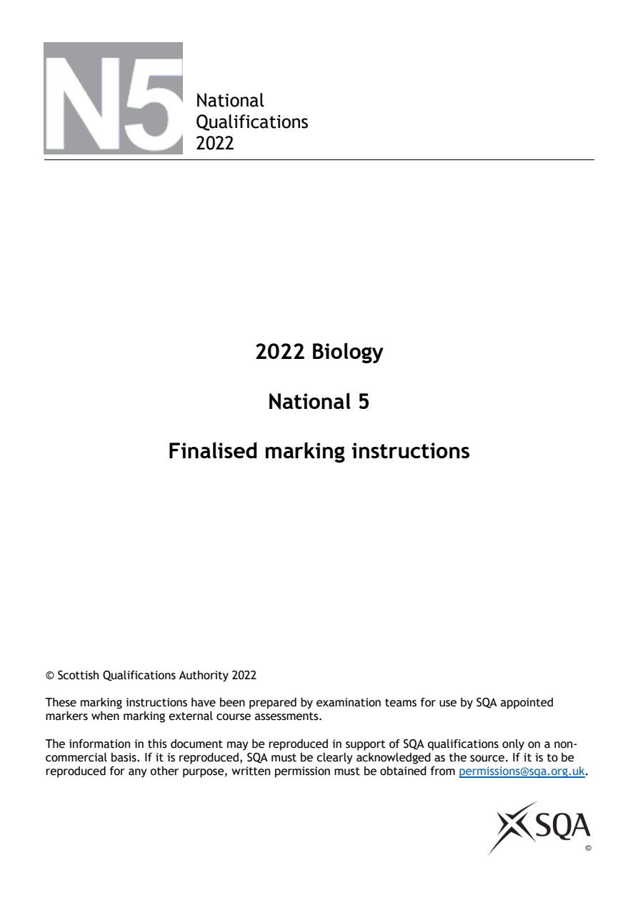
Selectable page text
National
Qualifications
2022
2022 Biology
National 5
Finalised marking instructions
© Scottish Qualifications Authority 2022
These marking instructions have been prepared by examination teams for use by SQA appointed
markers when marking external course assessments.
The information in this document may be reproduced in support of SQA qualifications only on a non-
commercial basis. If it is reproduced, SQA must be clearly acknowledged as the source. If it is to be
reproduced for any other purpose, written permission must be obtained from permissions@sqa.org.uk.PDF page 2
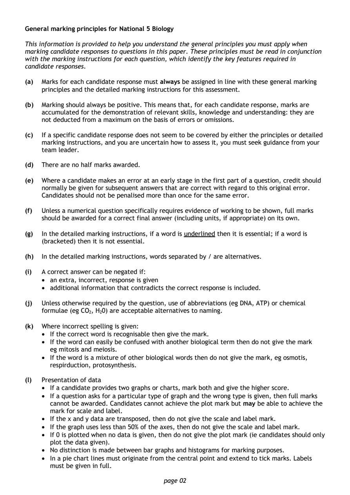
Selectable page text
General marking principles for National 5 Biology
This information is provided to help you understand the general principles you must apply when
marking candidate responses to questions in this paper. These principles must be read in conjunction
with the marking instructions for each question, which identify the key features required in
candidate responses.
(a) Marks for each candidate response must always be assigned in line with these general marking
principles and the detailed marking instructions for this assessment.
(b) Marking should always be positive. This means that, for each candidate response, marks are
accumulated for the demonstration of relevant skills, knowledge and understanding: they are
not deducted from a maximum on the basis of errors or omissions.
(c) If a specific candidate response does not seem to be covered by either the principles or detailed
marking instructions, and you are uncertain how to assess it, you must seek guidance from your
team leader.
(d) There are no half marks awarded.
(e) Where a candidate makes an error at an early stage in the first part of a question, credit should
normally be given for subsequent answers that are correct with regard to this original error.
Candidates should not be penalised more than once for the same error.
(f) Unless a numerical question specifically requires evidence of working to be shown, full marks
should be awarded for a correct final answer (including units, if appropriate) on its own.
(g) In the detailed marking instructions, if a word is underlined then it is essential; if a word is
(bracketed) then it is not essential.
(h) In the detailed marking instructions, words separated by / are alternatives.
(i) A correct answer can be negated if:
• an extra, incorrect, response is given
• additional information that contradicts the correct response is included.
(j) Unless otherwise required by the question, use of abbreviations (eg DNA, ATP) or chemical
formulae (eg CO , H 0) are acceptable alternatives to naming.
2 2
(k) Where incorrect spelling is given:
• If the correct word is recognisable then give the mark.
• If the word can easily be confused with another biological term then do not give the mark
eg mitosis and meiosis.
• If the word is a mixture of other biological words then do not give the mark, eg osmotis,
respirduction, protosynthesis.
(l) Presentation of data
• If a candidate provides two graphs or charts, mark both and give the higher score.
• If a question asks for a particular type of graph and the wrong type is given, then full marks
cannot be awarded. Candidates cannot achieve the plot mark but may be able to achieve the
mark for scale and label.
• If the x and y data are transposed, then do not give the scale and label mark.
• If the graph uses less than 50% of the axes, then do not give the scale and label mark.
• If 0 is plotted when no data is given, then do not give the plot mark (ie candidates should only
plot the data given).
• No distinction is made between bar graphs and histograms for marking purposes.
• In a pie chart lines must originate from the central point and extend to tick marks. Labels
must be given in full.
page 02PDF page 3
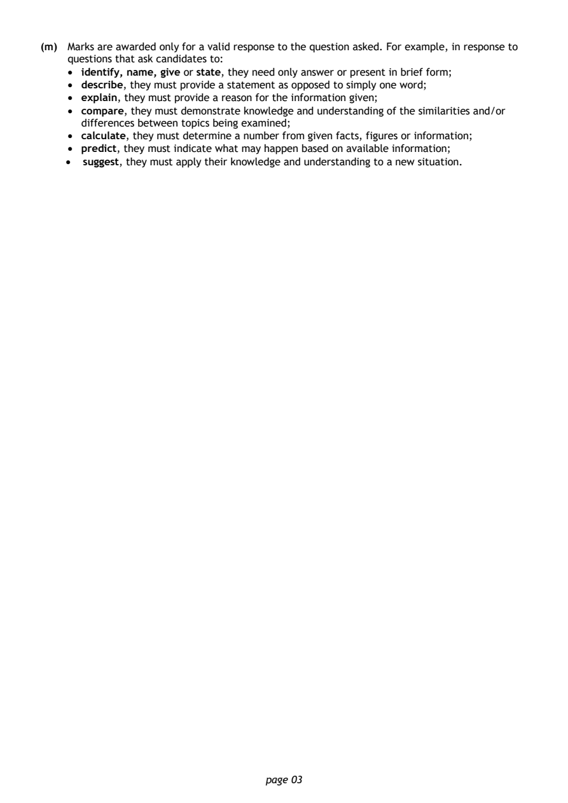
Selectable page text
(m) Marks are awarded only for a valid response to the question asked. For example, in response to
questions that ask candidates to:
• identify, name, give or state, they need only answer or present in brief form;
• describe, they must provide a statement as opposed to simply one word;
• explain, they must provide a reason for the information given;
• compare, they must demonstrate knowledge and understanding of the similarities and/or
differences between topics being examined;
• calculate, they must determine a number from given facts, figures or information;
• predict, they must indicate what may happen based on available information;
• suggest, they must apply their knowledge and understanding to a new situation.
page 03PDF page 4
Paper 1, Question 1Paper 1, Question 2Paper 1, Question 3Paper 1, Question 4Paper 1, Question 5Paper 1, Question 6Paper 1, Question 7Paper 1, Question 8Paper 1, Question 9Paper 1, Question 10Paper 1, Question 11Paper 1, Question 12Paper 1, Question 13Paper 1, Question 14Paper 1, Question 15Paper 1, Question 16Paper 1, Question 17Paper 1, Question 18Paper 1, Question 19Paper 1, Question 20Paper 1, Question 21Paper 1, Question 22Paper 1, Question 23Paper 1, Question 24Paper 1, Question 25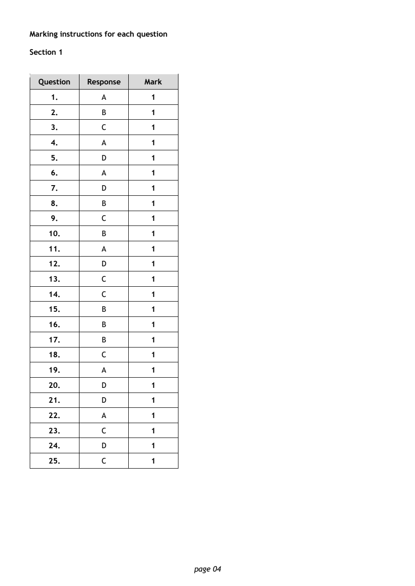
Selectable page text
Marking instructions for each question
Section 1
Question Response Mark
1. A 1
2. B 1
3. C 1
4. A 1
5. D 1
6. A 1
7. D 1
8. B 1
9. C 1
10. B 1
11. A 1
12. D 1
13. C 1
14. C 1
15. B 1
16. B 1
17. B 1
18. C 1
19. A 1
20. D 1
21. D 1
22. A 1
23. C 1
24. D 1
25. C 1
page 04PDF page 5
Paper 2, Question 1Paper 2, Question 2Paper 2, Question 3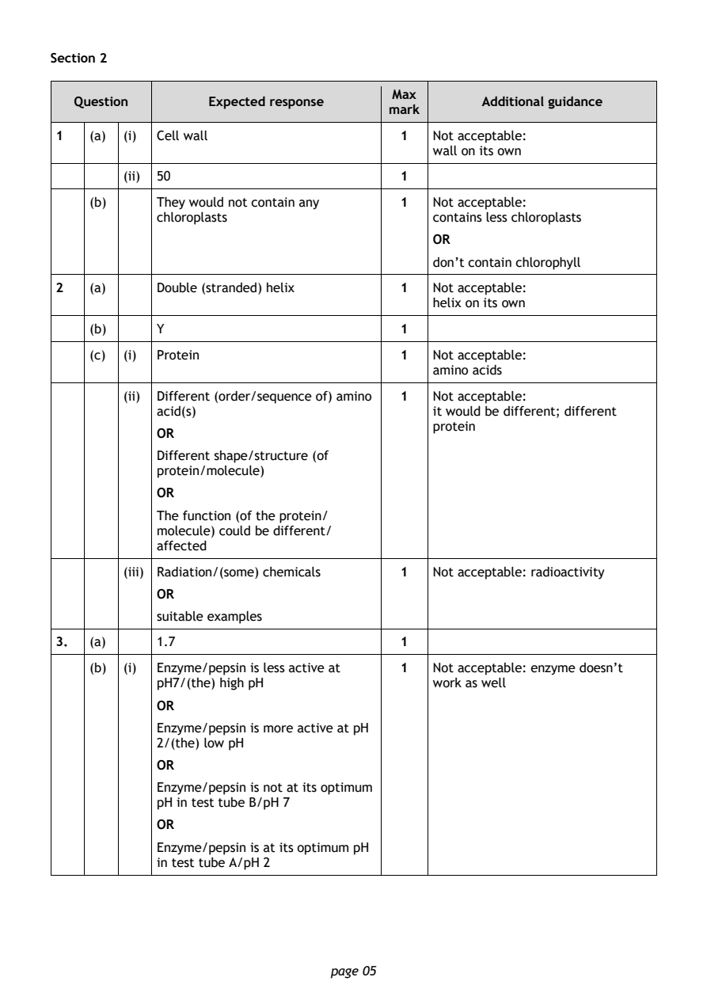
Selectable page text
Section 2
Max
Question Expected response Additional guidance
mark
1 (a) (i) Cell wall 1 Not acceptable:
wall on its own
(ii) 50 1
(b) They would not contain any 1 Not acceptable:
chloroplasts contains less chloroplasts
OR
don’t contain chlorophyll
2 (a) Double (stranded) helix 1 Not acceptable:
helix on its own
(b) Y 1
(c) (i) Protein 1 Not acceptable:
amino acids
(ii) Different (order/sequence of) amino 1 Not acceptable:
acid(s) it would be different; different
protein
OR
Different shape/structure (of
protein/molecule)
OR
The function (of the protein/
molecule) could be different/
affected
(iii) Radiation/(some) chemicals 1 Not acceptable: radioactivity
OR
suitable examples
3. (a) 1.7 1
(b) (i) Enzyme/pepsin is less active at 1 Not acceptable: enzyme doesn’t
pH7/(the) high pH work as well
OR
Enzyme/pepsin is more active at pH
2/(the) low pH
OR
Enzyme/pepsin is not at its optimum
pH in test tube B/pH 7
OR
Enzyme/pepsin is at its optimum pH
in test tube A/pH 2
page 05PDF page 6
Paper 2, Question 4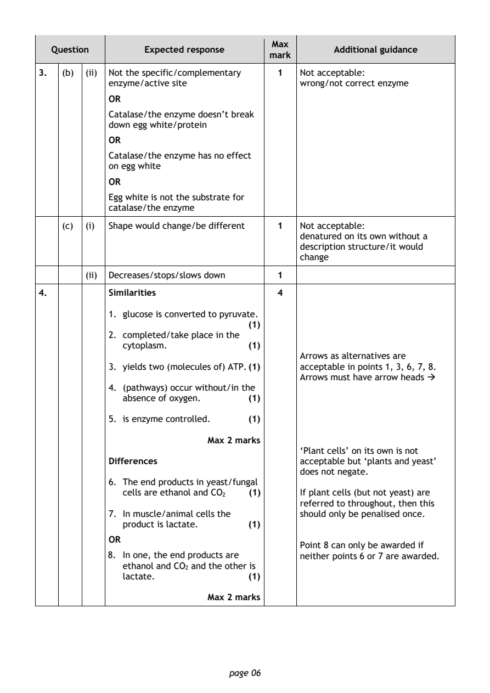
Selectable page text
Max
Question Expected response Additional guidance
mark
3. (b) (ii) Not the specific/complementary 1 Not acceptable:
enzyme/active site wrong/not correct enzyme
OR
Catalase/the enzyme doesn’t break
down egg white/protein
OR
Catalase/the enzyme has no effect
on egg white
OR
Egg white is not the substrate for
catalase/the enzyme
(c) (i) Shape would change/be different 1 Not acceptable:
denatured on its own without a
description structure/it would
change
(ii) Decreases/stops/slows down 1
4. Similarities 4
1. glucose is converted to pyruvate.
(1)
2. completed/take place in the
cytoplasm. (1)
Arrows as alternatives are
3. yields two (molecules of) ATP. (1) acceptable in points 1, 3, 6, 7, 8.
Arrows must have arrow heads →
4. (pathways) occur without/in the
absence of oxygen. (1)
5. is enzyme controlled. (1)
Max 2 marks
‘Plant cells’ on its own is not
Differences acceptable but ‘plants and yeast’
does not negate.
6. The end products in yeast/fungal
cells are ethanol and CO (1) If plant cells (but not yeast) are
2
referred to throughout, then this
7. In muscle/animal cells the should only be penalised once.
product is lactate. (1)
OR
Point 8 can only be awarded if
8. In one, the end products are neither points 6 or 7 are awarded.
ethanol and CO and the other is
2
lactate. (1)
Max 2 marks
page 06PDF page 7
Paper 2, Question 5Paper 2, Question 6Paper 2, Question 7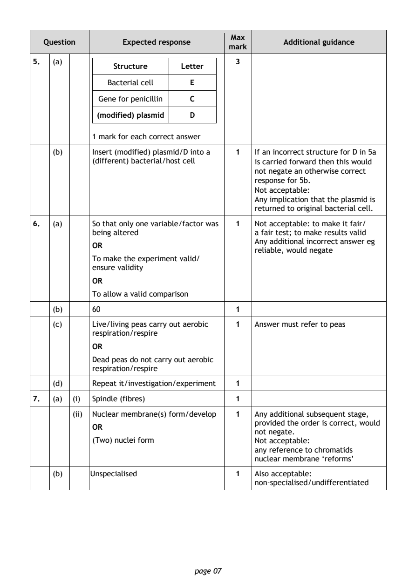
Selectable page text
Max
Question Expected response Additional guidance
mark
5. (a) 3
Structure Letter
Bacterial cell E
Gene for penicillin C
(modified) plasmid D
1 mark for each correct answer
(b) Insert (modified) plasmid/D into a 1 If an incorrect structure for D in 5a
(different) bacterial/host cell is carried forward then this would
not negate an otherwise correct
response for 5b.
Not acceptable:
Any implication that the plasmid is
returned to original bacterial cell.
6. (a) So that only one variable/factor was 1 Not acceptable: to make it fair/
being altered a fair test; to make results valid
Any additional incorrect answer eg
OR
reliable, would negate
To make the experiment valid/
ensure validity
OR
To allow a valid comparison
(b) 60 1
(c) Live/living peas carry out aerobic 1 Answer must refer to peas
respiration/respire
OR
Dead peas do not carry out aerobic
respiration/respire
(d) Repeat it/investigation/experiment 1
7. (a) (i) Spindle (fibres) 1
(ii) Nuclear membrane(s) form/develop 1 Any additional subsequent stage,
provided the order is correct, would
OR
not negate.
(Two) nuclei form Not acceptable:
any reference to chromatids
nuclear membrane ‘reforms’
(b) Unspecialised 1 Also acceptable:
non-specialised/undifferentiated
page 07PDF page 8
Paper 2, Question 8Paper 2, Question 9Paper 2, Question 10Paper 2, Question 11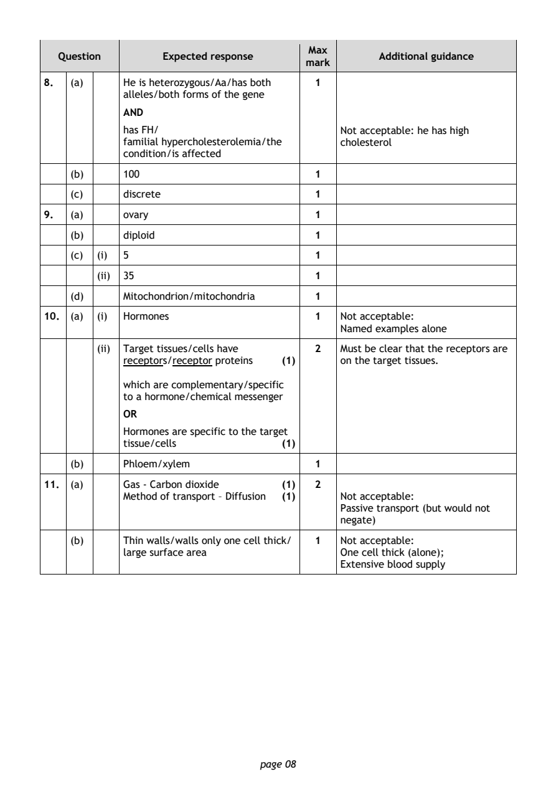
Selectable page text
Max
Question Expected response Additional guidance
mark
8. (a) He is heterozygous/Aa/has both 1
alleles/both forms of the gene
AND
has FH/ Not acceptable: he has high
familial hypercholesterolemia/the cholesterol
condition/is affected
(b) 100 1
(c) discrete 1
9. (a) ovary 1
(b) diploid 1
(c) (i) 5 1
(ii) 35 1
(d) Mitochondrion/mitochondria 1
10. (a) (i) Hormones 1 Not acceptable:
Named examples alone
(ii) Target tissues/cells have 2 Must be clear that the receptors are
receptors/receptor proteins (1) on the target tissues.
which are complementary/specific
to a hormone/chemical messenger
OR
Hormones are specific to the target
tissue/cells (1)
(b) Phloem/xylem 1
11. (a) Gas - Carbon dioxide (1) 2
Method of transport – Diffusion (1) Not acceptable:
Passive transport (but would not
negate)
(b) Thin walls/walls only one cell thick/ 1 Not acceptable:
large surface area One cell thick (alone);
Extensive blood supply
page 08PDF page 9
Paper 2, Question 12Paper 2, Question 13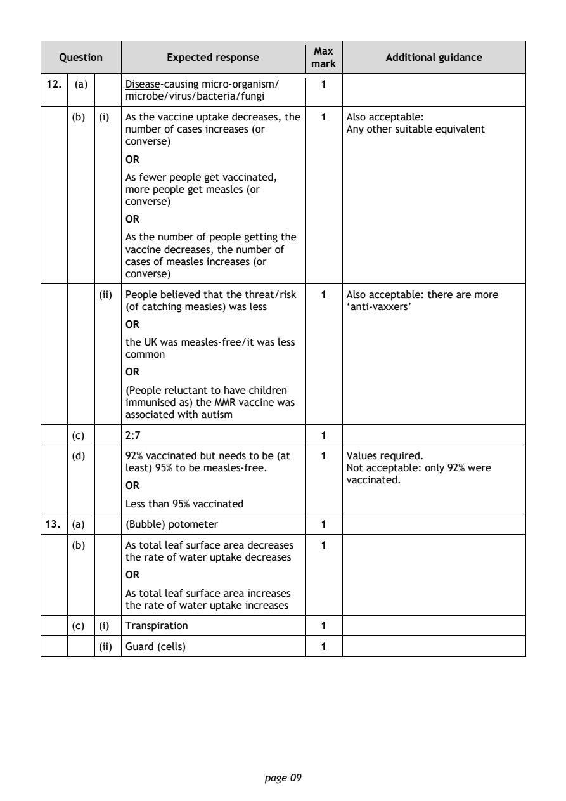
Selectable page text
Max
Question Expected response Additional guidance
mark
12. (a) Disease-causing micro-organism/ 1
microbe/virus/bacteria/fungi
(b) (i) As the vaccine uptake decreases, the 1 Also acceptable:
number of cases increases (or Any other suitable equivalent
converse)
OR
As fewer people get vaccinated,
more people get measles (or
converse)
OR
As the number of people getting the
vaccine decreases, the number of
cases of measles increases (or
converse)
(ii) People believed that the threat/risk 1 Also acceptable: there are more
(of catching measles) was less ‘anti-vaxxers’
OR
the UK was measles-free/it was less
common
OR
(People reluctant to have children
immunised as) the MMR vaccine was
associated with autism
(c) 2:7 1
(d) 92% vaccinated but needs to be (at 1 Values required.
least) 95% to be measles-free. Not acceptable: only 92% were
vaccinated.
OR
Less than 95% vaccinated
13. (a) (Bubble) potometer 1
(b) As total leaf surface area decreases 1
the rate of water uptake decreases
OR
As total leaf surface area increases
the rate of water uptake increases
(c) (i) Transpiration 1
(ii) Guard (cells) 1
page 09PDF page 10
Paper 2, Question 14Paper 2, Question 15Paper 2, Question 16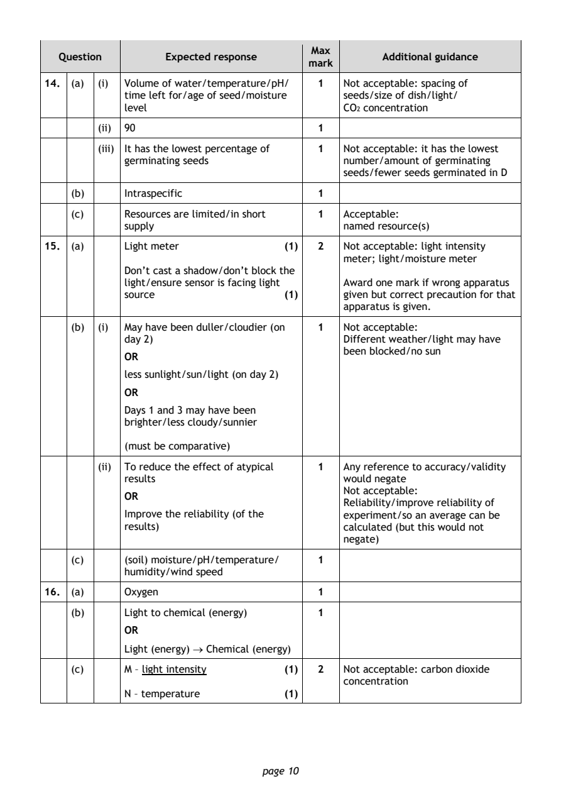
Selectable page text
Max
Question Expected response Additional guidance
mark
14. (a) (i) Volume of water/temperature/pH/ 1 Not acceptable: spacing of
time left for/age of seed/moisture seeds/size of dish/light/
level CO concentration
2
(ii) 90 1
(iii) It has the lowest percentage of 1 Not acceptable: it has the lowest
germinating seeds number/amount of germinating
seeds/fewer seeds germinated in D
(b) Intraspecific 1
(c) Resources are limited/in short 1 Acceptable:
supply named resource(s)
15. (a) Light meter (1) 2 Not acceptable: light intensity
meter; light/moisture meter
Don’t cast a shadow/don’t block the
light/ensure sensor is facing light Award one mark if wrong apparatus
source (1) given but correct precaution for that
apparatus is given.
(b) (i) May have been duller/cloudier (on 1 Not acceptable:
day 2) Different weather/light may have
been blocked/no sun
OR
less sunlight/sun/light (on day 2)
OR
Days 1 and 3 may have been
brighter/less cloudy/sunnier
(must be comparative)
(ii) To reduce the effect of atypical 1 Any reference to accuracy/validity
results would negate
Not acceptable:
OR
Reliability/improve reliability of
Improve the reliability (of the experiment/so an average can be
results) calculated (but this would not
negate)
(c) (soil) moisture/pH/temperature/ 1
humidity/wind speed
16. (a) Oxygen 1
(b) Light to chemical (energy) 1
OR
Light (energy) → Chemical (energy)
(c) M – light intensity (1) 2 Not acceptable: carbon dioxide
concentration
N – temperature (1)
page 10PDF page 11
Paper 2, Question 17Paper 2, Question 18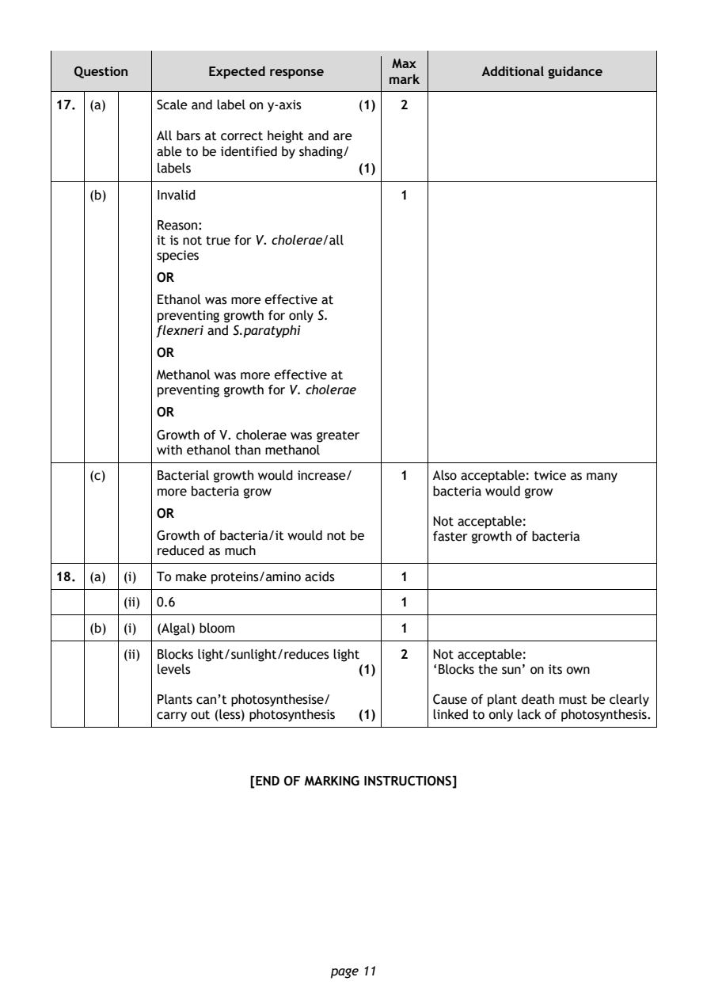
Selectable page text
Max
Question Expected response Additional guidance
mark
17. (a) Scale and label on y-axis (1) 2
All bars at correct height and are
able to be identified by shading/
labels (1)
(b) Invalid 1
Reason:
it is not true for V. cholerae/all
species
OR
Ethanol was more effective at
preventing growth for only S.
flexneri and S.paratyphi
OR
Methanol was more effective at
preventing growth for V. cholerae
OR
Growth of V. cholerae was greater
with ethanol than methanol
(c) Bacterial growth would increase/ 1 Also acceptable: twice as many
more bacteria grow bacteria would grow
OR
Not acceptable:
Growth of bacteria/it would not be faster growth of bacteria
reduced as much
18. (a) (i) To make proteins/amino acids 1
(ii) 0.6 1
(b) (i) (Algal) bloom 1
(ii) Blocks light/sunlight/reduces light 2 Not acceptable:
levels (1) ‘Blocks the sun’ on its own
Plants can’t photosynthesise/ Cause of plant death must be clearly
carry out (less) photosynthesis (1) linked to only lack of photosynthesis.
[END OF MARKING INSTRUCTIONS]
page 11